Autodesk Fusion 360
Autodesk Fusion 360 is a cloud-based CAD, CAM and CAE software which combines organic shape modelling and designing. The designs can be used for both 3D Printing and laser cutting which will be covered later in this elective thus making this software especially useful. As I study in the School of Mechanical & Aeronautical Engineering, I took CAD for a semester long module which introduced me to softwares like AutoCAD and AutoDesk Inventor. Since these software shares many similar features with Autodesk Fusion 360, I will be able to familiarise and adapt to the software pretty easily.
Drawing Exercises
To start of, I begin doing some basic 2D Drawing Exercises to recap myself on the tools, features and techniques.
Drawing Exercise 1
 |
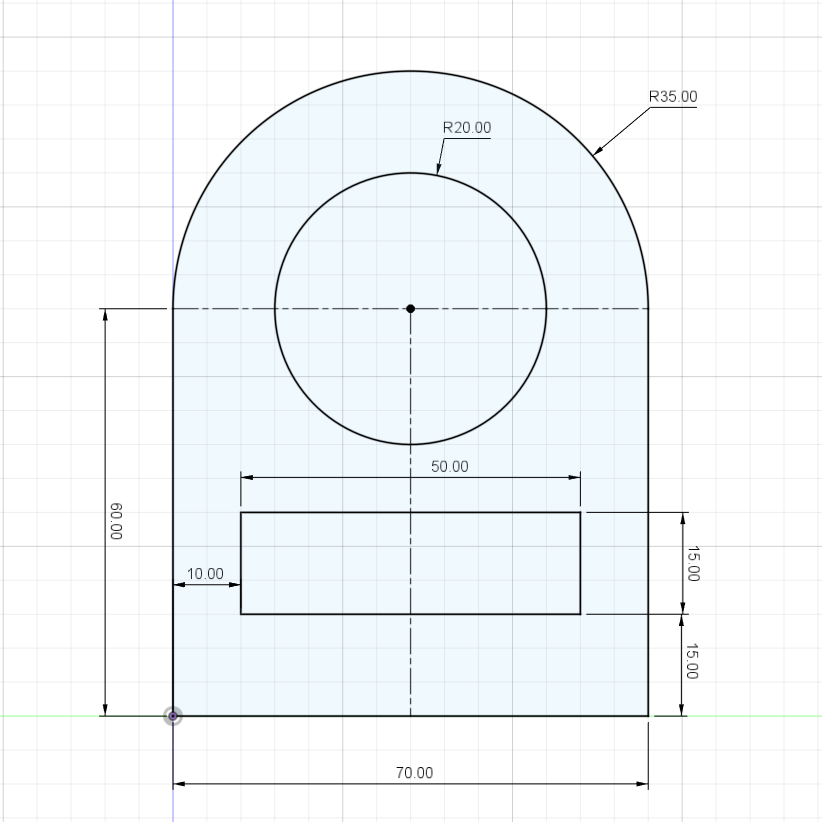 |
Drawing Exercise 2
I used the tutorial video to help me with my second drawing exercise.
 |
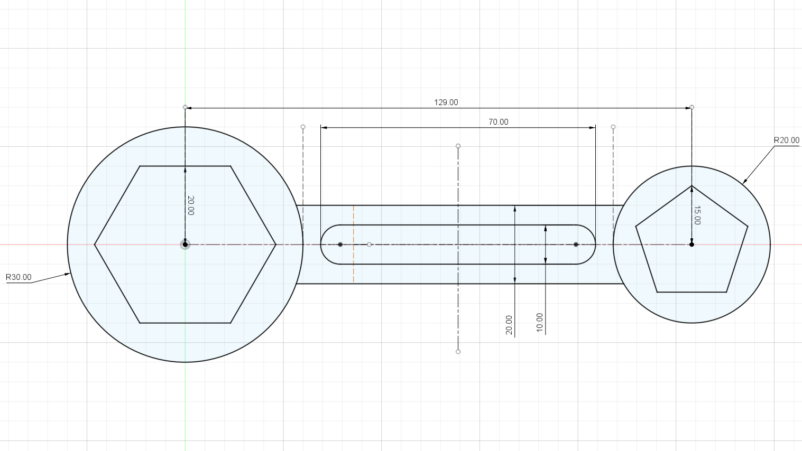 |
Parametric Design
Next, I learned how to make a fully configurable polygon with parametric sides and size to add parametric design into my arsenal. Designing using parameters allow quick and easy change using the parameter tool under the modify tab which will come in handy during my later projects.
| 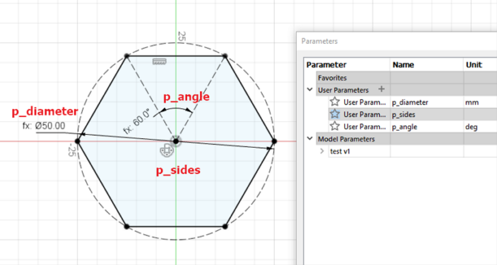 | 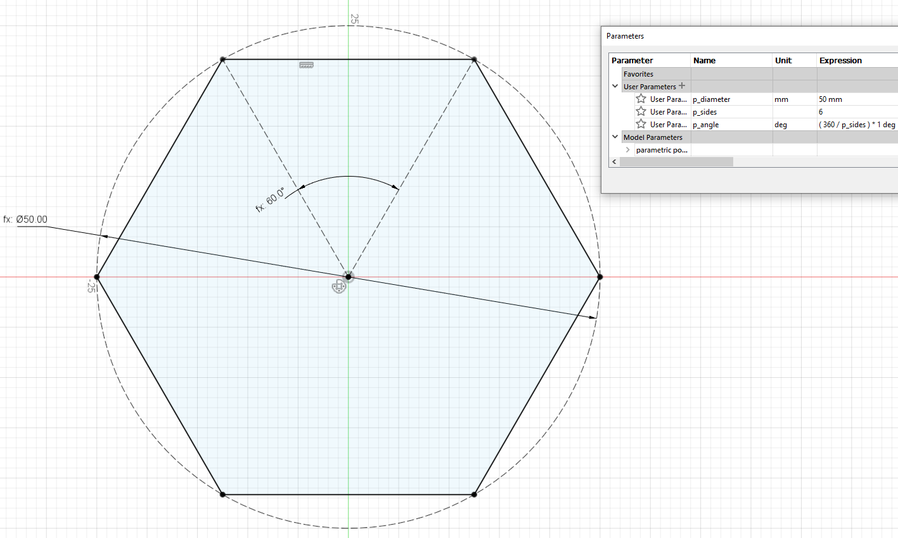 |
Extrusion
Now that I have learned how to make 2D profiles, I will now explore the extrude functions to turn my 2D profile into 3D models.
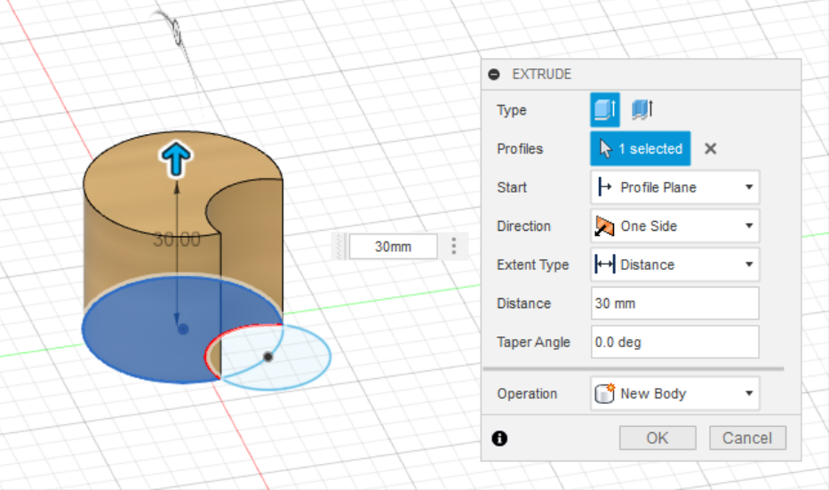From here I can learn to build new bodies by adding/creating the original.
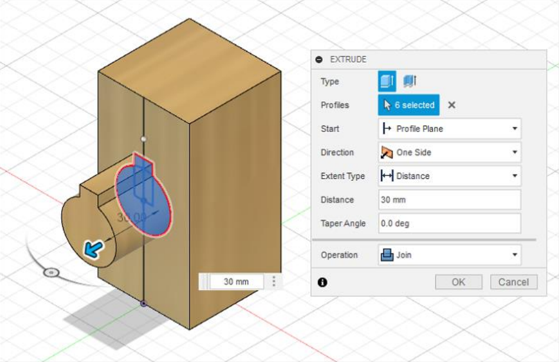I can also learn to cut holes using subtraction to the original.
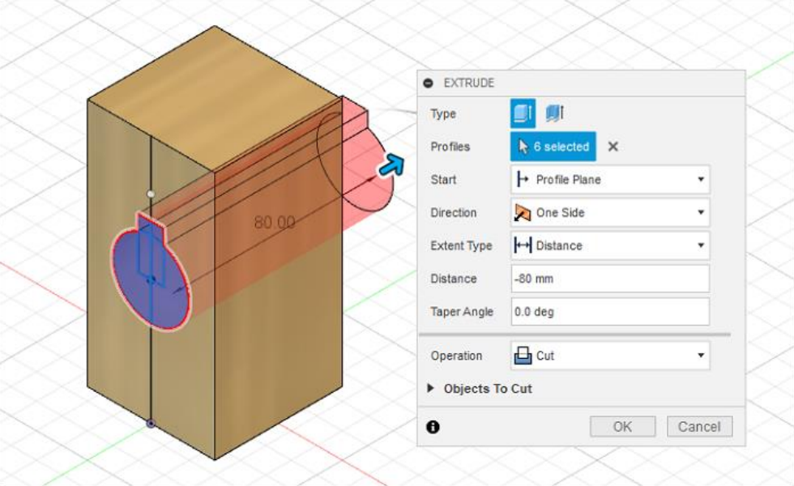Name Tag
Now with all the skills I have learnt thus far, I can make a name tag.
Modify
After exploring the different extrude functions to turn my 2D profile into 3D models, I further deepened my skills by learning the various Modify tools to incorporate specific shapes and design into my 3D models. I will first learn how to make a shell of a solid object by starting with the face that was selected and specifiying a specified thickness.
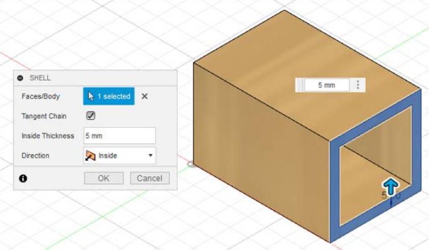Next I learned to create a solid object from profiles on different planes using the loft tool.
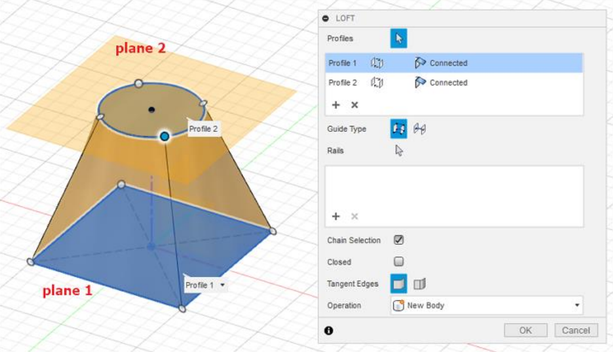Lego Brick
I proceed to make a lego brick with the help of Kevin Kennedy's video tutorial using the skills I have just picked up.
Extrudes & Planes
Finally, as a final revision of all the skills I accquired, I made an object which is made up of 20 cubes (20mm) glued together and then shelled to a thickness of 4mm.
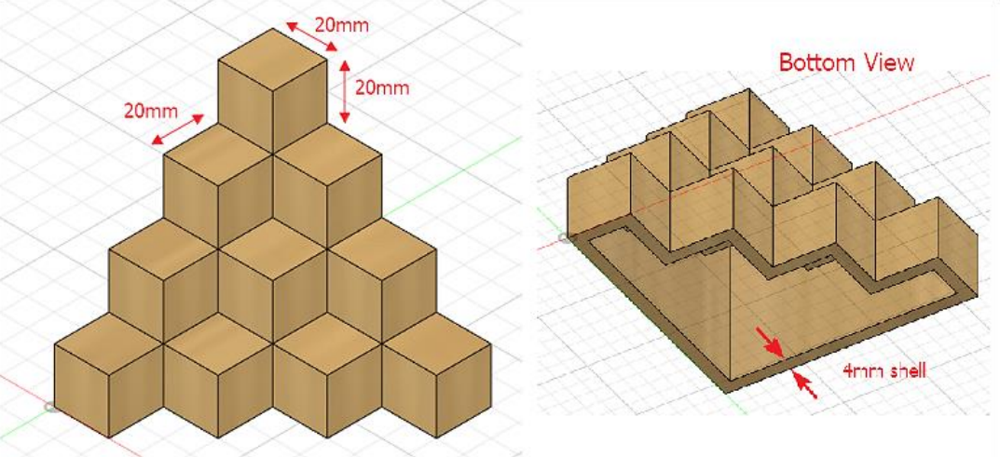Revolve
Since I have completed learning the basic tools for Extrusion (which uses a 2D plane profile and extends it into a 3D plane) and also learned some of the basic Modify tools (which manipulates the shape of a 3D object), I will finally learn the revolve function which allows me to rotate a 2D plane profile around an axis.
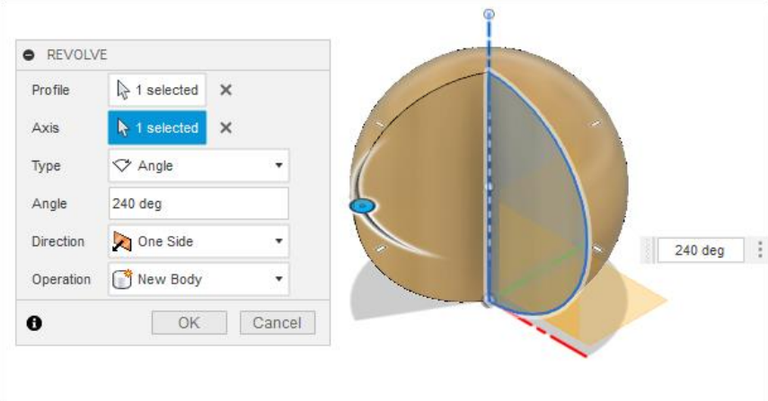Mug with Handle
Upon learning this new function, I proceed to attempt to make a normal mug and one of my favourite mug as an exercise on using the revolve and extrude functions.
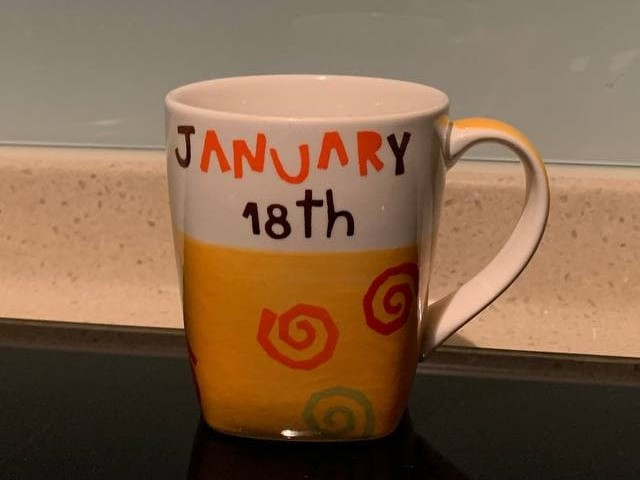Hex Nut
As before, I used Kevin Kennedy's video tutorial on how to make a hex nut to continue familiarising myself to the new function.
Laptop Stand
As a final practice before venturing out into my projects, I made a model of a laptop stand with the help of the Combine, Joints, Cross-sectional views and Clearances function under the Modify tool with the help of a tutorial video.
Thus with all this skills I now have at my fingertips, I can begin with my projects such as 3D Printing and Laser Cutting.